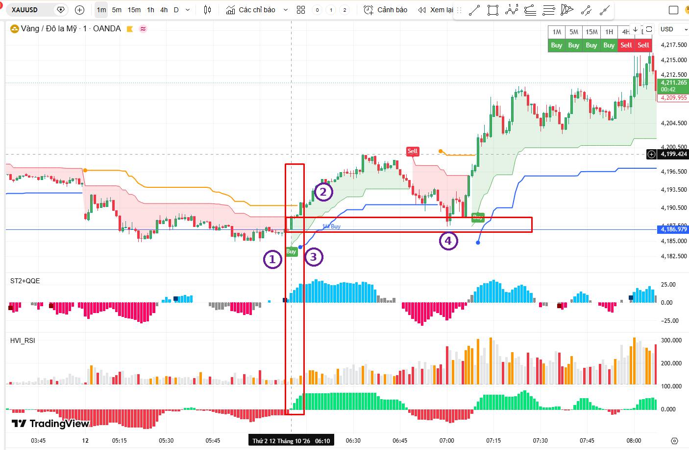
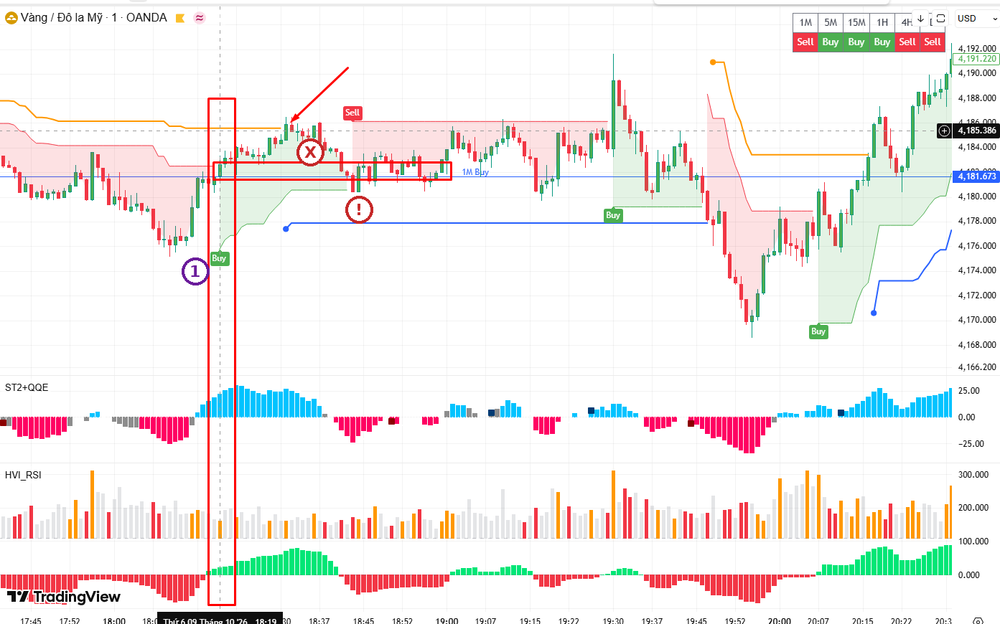
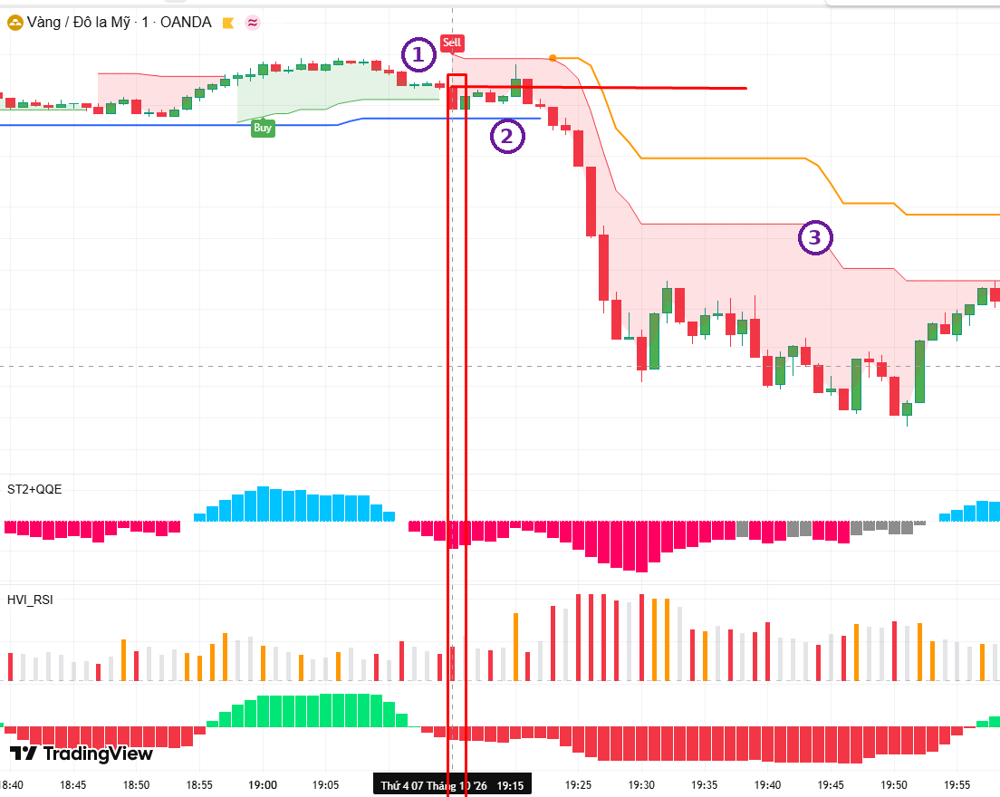
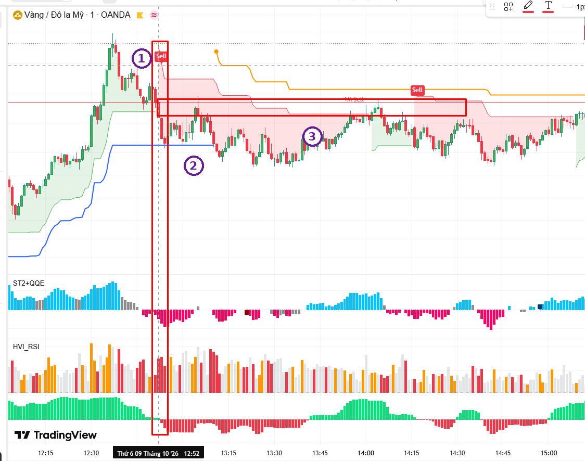
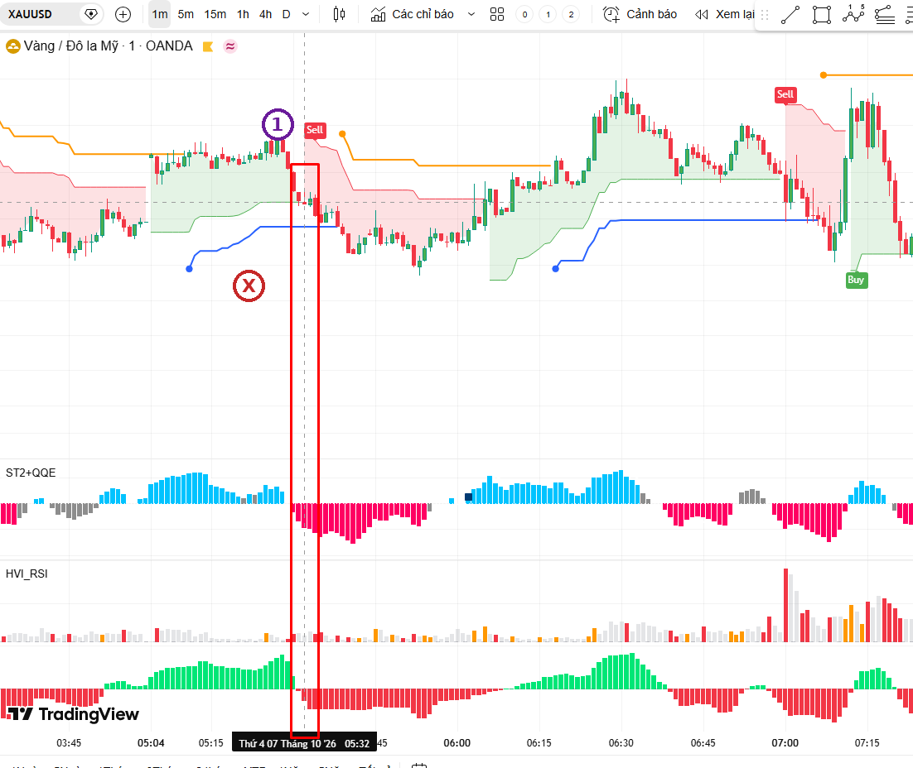

v1.8 · ST1 + ST2 + QQE MOD + RSI HISTOGRAM + HVI_LB · chờ giá hồi về Entry
Bộ quy tắc dựa trên chỉ báo xSupertrend_ST2QQE_HVI_v1.8. ST2 cho tín hiệu (nhãn Buy/Sell đã qua bộ lọc), ST1 xác nhận xu hướng lớn. Điểm khác biệt của phương pháp: không đuổi giá, chờ giá hồi về mức Entry của nến tín hiệu ST2 rồi mới vào lệnh, và chỉ áp dụng khi đoạn ST1 ngược chiều trước đó đủ dài/xa và giá đã vượt hẳn nó.
Tóm tắt phương pháp (1 phút đọc)
Tín hiệu: ST2 ra nhãn Buy/Sell. Nến có nhãn là nến Entry.
Đồng thuận: ST1 đổi chiều cùng hướng với tín hiệu ST2 sau đó.
Lọc chất lượng: đoạn ST1 ngược chiều trước đó phải đủ dài/xa và giá phải vượt hẳn đường ST1 đó.
Vào lệnh: chờ giá hồi về mức Entry của nến ST2, không đuổi giá.
Bỏ qua nếu đoạn ST1 ngược chiều chỉ vài nến, hoặc giá không vượt khỏi đường ST1 đó.
Lưu ý quan trọng — đây là tài liệu tổng hợp mang tính giáo dục và ghi chú cá nhân, không phải lời khuyên đầu tư. Hướng dẫn tổng hợp từ 5 ví dụ trên XAUUSD khung 1 phút, chưa phải kết quả backtest. Kết quả trong quá khứ không đảm bảo hiệu suất tương lai; hãy tự kiểm chứng bằng backtest / forward-test trước khi dùng vốn thật.
Về hình ảnh minh họa — ảnh trong các mục Mua/Bán được chụp từ chart thật (TradingView/OANDA), đánh số ①②③④ theo từng bước. Dấu X hoặc ! đánh dấu điểm khiến ví dụ bị loại. Nhấn vào ảnh để phóng to.
00
Nghe tổng quan
Bản tổng quan bằng âm thanh của toàn bộ hệ thống (tạo bằng NotebookLM từ tài liệu v1.8). Nhấn nút phát để nghe ngay trên trang.
Hệ thống Supertrend x2 chờ giá hồi
Tổng quan bằng âm thanh · Tiếng Việt · khoảng 16 phút
0:00--:--
Âm thanh do AI tạo, có thể diễn đạt chưa hoàn toàn chính xác. Khi có khác biệt, hãy lấy nội dung chữ trên trang này làm chuẩn.
01
Đọc chart: các thành phần của chỉ báo
Nhãn Buy/Sell của ST2 chỉ xuất hiện khi QQE MOD + HVI_LB cùng màu (trong tối đa 3 nến kể từ lúc ST2 đổi chiều) và RSI Histogram đúng màu, vừa đổi màu trong ≤5 nến. Vì vậy nhãn bạn thấy trên chart đã là tín hiệu đã lọc; ba pane phụ chỉ dùng để đánh giá độ mạnh của nhịp.
Thành phần
Hiển thị
Vai trò
ST1 ATR 10, Mult 6
Đường dày: xanh dương = tăng (Buy), cam = giảm (Sell). Chấm tròn = điểm đổi chiều.
Xu hướng lớn. Xác nhận hướng và đo "đoạn ST1 ngược chiều" trước đó.
ST2 ATR 10, Mult 4
Đường mảnh + vùng tô: xanh lá = tăng, đỏ = giảm. Nhãn Buy (xanh lá) / Sell (đỏ).
Tín hiệu vào. Nến có nhãn = nến Entry.
QQE MOD pane "ST2+QQE"
Cột xanh dương nhạt = lực tăng, hồng đậm = lực giảm, xám = chưa đủ điều kiện.
Lọc 2: đúng màu và vừa mới đảo màu (trong 5 cột đầu).
Ô vuông nhỏ trên pane QQE
Xanh đậm / đỏ đậm.
Mẫu hình Trống-Tăng-Trống-Tăng (hoặc Giảm). Tham khảo, không bắt buộc.
Bảng đa khung góc trên phải
1M, 5M, 15M, 1H, 4H, D: ô Buy (xanh) / Sell (đỏ).
Xem các khung lớn có ủng hộ hướng lệnh không.
02
Quy trình lệnh BUY
LONG
1Nhận tín hiệu ST2. Nhãn Buy xanh lá. Ghi nhớ giá của nến này: đó là mức Entry (vẽ hộp/đường ngang qua nến).
2Chờ ST1 xác nhận. ST1 đổi từ cam (Sell) sang xanh dương (Buy), xuất hiện chấm tròn xanh dương.
3Kiểm tra đoạn ST1 Sell trước đó. Đoạn đường cam phải đủ dài/xa và giá đã vượt lên trên đường cam. Nếu không đạt: BỎ QUA.
4Chờ giá hồi. Không vào ngay. Chờ giá quay xuống chạm lại vùng Entry của bước 1.
5Vào lệnh Buy. Giá chạm vùng Entry và (nên) có phản ứng giữ giá. Đặt SL/TP theo mục 05.
HỢP LỆ Ví dụ BUY — Ảnh 1 (12/10, 06:10)

① 06:10: nhãn Buy ST2, QQE xanh, HVI cam, RSI Histogram vừa chuyển xanh. Đây là nến Entry (hộp đỏ ngang ở mức ~4.187). ② Giá vượt hẳn lên trên đường cam ST1 Sell, đoạn cam này kéo dài nhiều nến phía trước nên đạt điều kiện "đủ dài/xa". ③ ST1 đổi sang Buy (chấm tròn xanh dương): đồng thuận với ST2. ④ Khoảng 07:00, giá hồi về đúng vùng Entry (hộp đỏ) rồi bật lên mạnh: đây là điểm vào lệnh Buy.
BỎ QUA Ví dụ BUY — Ảnh 2 (09/10, 18:19)

① 18:19: có nhãn Buy ST2 và ST1 sau đó cũng đổi Buy. X Nhưng đoạn ST1 Sell trước đó chỉ vài nến và giá không vượt khỏi đường cam (mũi tên đỏ chỉ đỉnh nhịp tăng chỉ vừa chạm). ! Khi giá hồi về Entry thì xuyên xuống dưới vùng Entry và đi xa hơn: nếu vào lệnh sẽ dễ dính SL. Quyết định: không vào.
03
Quy trình lệnh SELL
SHORT
Là gương đối xứng của lệnh Buy:
1Nhận tín hiệu ST2. Nhãn Sell đỏ. Nến này là mức Entry.
2Chờ ST1 xác nhận. ST1 đổi từ xanh dương (Buy) sang cam (Sell), xuất hiện chấm tròn cam.
3Kiểm tra đoạn ST1 Buy trước đó. Đoạn đường xanh dương phải đủ dài/xa và giá đã thủng xuống dưới đường này. Nếu không: BỎ QUA.
4Chờ giá hồi. Không vào ngay. Chờ giá hồi lên chạm lại vùng Entry.
5Vào lệnh Sell. Giá chạm vùng Entry và bị đẩy xuống lại. Đặt SL/TP theo mục 05.
HỢP LỆ Ví dụ SELL — Ảnh 4 (07/10, 19:15)

① 19:15: nhãn Sell ST2 sau một đoạn tăng. Đường đỏ ngang là mức Entry. ② ST1 đổi sang Sell (đường cam xuất hiện ngay sau đó), cùng hướng với ST2. ③ Đoạn ST1 Buy trước đó kéo dài (đường xanh dương từ trước 18:40) và giá rơi xa, thủng hẳn đường này: đạt điều kiện. Sau nhịp rơi, giá hồi dần lên về vùng Entry: đây là vùng canh Sell.
TRƯỜNG HỢP BIÊN Ví dụ SELL — Ảnh 3 (09/10, 12:52)

① 12:52: nhãn Sell ST2, ST1 Buy trước đó khá dài. ② Tuy nhiên giá chỉ chạm/vượt đường xanh dương ST1 Buy một chút rồi bật lại, chưa thủng rõ ràng. ③ Khi giá hồi về vùng Entry (hộp đỏ), nhịp bật lên cuối cùng cũng chỉ vượt ST1 Sell vài giá rồi giảm lại, kiểu dao động hẹp nên dễ quét SL. Nên giảm khối lượng hoặc bỏ qua nếu chưa chắc.
BỎ QUA Ví dụ SELL — Ảnh 5 (07/10, 05:32)

① 05:32: có nhãn Sell ST2. X Nhưng đoạn ST1 Buy trước đó chỉ vài nến (đường xanh dương ngắn) và giá không thủng đường này. Điều kiện 3 không đạt: không vào. Sau đó giá đảo lên cao hơn mức Entry.
04
Duy trì lệnh (sau khi đã vào)
Tiếp tục giữ lệnh khi các điều kiện sau vẫn còn:
ST1 và ST2 vẫn cùng hướng với lệnh (vùng tô ST2 cùng màu, đường ST1 chưa đổi màu).
Pane QQE vẫn cùng màu hướng lệnh (Buy: xanh dương; Sell: hồng). RSI Histogram chưa đảo màu.
Bảng đa khung: các khung 5M/15M không đảo ngược hướng lệnh.
Quản lý SL khi lệnh đã có lời:
Khi giá đã chạy được một đoạn đáng kể (ví dụ khoảng một nửa quãng TP), kéo SL về Entry để lệnh không còn rủi ro.
Có thể bám theo đường ST2 (cách ~2 giá) để dời SL theo xu hướng.
ST1 và ST2 cùng đi ngang dài: đà đã yếu. Canh thoát lệnh hoặc kéo SL về Entry (đúng ghi chú số 5 trong chỉ báo).
ST2 ra tín hiệu ngược chiều nhưng ST1 vẫn cùng hướng lệnh: thường là nhịp điều chỉnh. Không đảo lệnh; chỉ siết SL, và thoát hẳn khi ST1 đổi chiều (theo tinh thần ghi chú số 3, 4 của chỉ báo).
Hai ý cuối (kéo SL về Entry khi đã chạy được nửa quãng TP, và cách xử lý ST2 ngược chiều khi ST1 còn cùng hướng) là gợi ý bổ sung, chưa có trong ghi chú gốc của chỉ báo. Nên backtest trước khi áp dụng.
05
SL · TP
Stop loss
Cách biên ST2 khoảng 2 giá (Buy: dưới đường ST2 / đáy nhịp hồi; Sell: trên đường ST2 / đỉnh nhịp hồi).
Take profit
Khoảng 10 – 15 giá tính từ Entry. Không dùng tỷ lệ R:R cố định vì SL theo cấu trúc ST2.
SL quá xa
Nếu SL > 10 giá thì chờ giá hồi sát biên ST2 rồi mới vào để SL nhỏ lại.
Đơn vị
Tính theo giá, không theo $ vì mỗi lot có giá trị khác nhau.
Các mức này lấy từ bảng ghi chú giao dịch có sẵn trong chỉ báo. Hãy coi là mặc định để tinh chỉnh, không phải số cố định.
06
Thoát lệnh
Tình huống
Hành động
Chạm TP (~10 – 15 giá)
Chốt lời. Có thể chốt một phần và kéo SL phần còn lại về Entry.
Chạm SL
Chấp nhận mất, không dời SL ra xa. Không vào lại ngay khi chưa có tín hiệu mới.
ST1 đổi chiều ngược lệnh
Thoát toàn bộ. Điều kiện nền của lệnh đã mất.
ST2 đổi chiều + QQE và RSI Histogram cùng đảo màu
Thoát hoặc chốt phần lớn; động lượng đã hết.
ST1 & ST2 đi ngang dài
Canh thoát, hoặc kéo SL về Entry và chờ.
Giá hồi về Entry nhưng xuyên qua và đóng cửa hẳn ngoài vùng (như dấu "!" ở Ảnh 2)
Kịch bản hồi-và-giữ thất bại: cắt sớm, không đợi chạm SL nếu cấu trúc đã hỏng.
07
Checklist & trường hợp không vào lệnh
Điều kiện
Đạt (VÀO)
Không đạt (BỎ QUA)
Có nhãn ST2 (Buy/Sell) đã lọc
Có
Không có
ST1 đổi chiều cùng hướng ST2
Có
ST1 chưa đổi / ngược
Đoạn ST1 ngược chiều trước đó dài/xa
Nhiều nến, kéo xa
Chỉ vài nến
Giá vượt hẳn đường ST1 ngược chiều đó
Vượt rõ
Chỉ chạm / vượt vài giá, hoặc không vượt
Giá hồi về vùng Entry của nến ST2
Có, chờ đủ
Chưa hồi: không đuổi giá
SL ~2 giá ngoài biên ST2, TP 10–15 giá
Khoảng cách hợp lý
SL quá xa: chờ hồi sâu hơn
Mẹo nhận diện nhanh: Ảnh 1 và Ảnh 4 là hai mẫu "chuẩn" (đoạn ST1 ngược dài + giá vượt rõ). Ảnh 3 là trường hợp biên. Ảnh 2 và Ảnh 5 là mẫu cần tránh (đoạn ST1 ngược ngắn, giá không vượt).
01Chỉ vài nến ST1 ngược chiều, giá không vượt khỏi đường ST1 đó.Bỏ qua
02Giá chưa hồi về Entry mà đã chạy luôn.Không đuổi giá
03Giá đi ngang, nến nhỏ, lộn xộn (sideway).Không vào lệnh
04Tín hiệu ST2 ngược chiều ST1 giữa chu kỳ ST1 còn mạnh (hồi kỹ thuật).Ưu tiên xu hướng chính
05ST2 đổi màu nhưng QQE/HVI/RSI chưa xác nhận (chưa có nhãn).Chưa đủ điều kiện
08
Vì sao dùng 2 lớp lọc nối tiếp thay vì 1
Đính chính so với bản ghi chú cũ: ở bản v1.6 thực tế, QQE MOD không hề bị bỏ — nó vẫn chạy đầy đủ trong file chỉ báo và là lớp lọc đầu tiên (cùng HVI_LB). RSI Histogram (bản làm mượt KAMA của tác giả dman103) được thêm vào như lớp lọc thứ hai, chạy sau khi QQE MOD + HVI_LB đã xác nhận — không phải thay thế cho nhau.
Lý do tách 2 lớp thay vì gộp chung: QQE MOD phản ứng nhanh với động lượng nhưng đôi khi "nhạy sớm" ở các cú rung ngắn (đặc biệt lúc thị trường đi ngang). RSI Histogram được làm mượt bằng KAMA nên bền hơn, ít nhiễu hơn, đóng vai trò "chốt chặn" cuối cùng — chỉ giữ tín hiệu nếu cột RSI Histogram vừa đổi màu trong 5 nến gần nhất (tức đang ở pha khởi đầu của một nhịp mới, không phải đã chạy được nửa chừng).
Nói ngắn gọn: QQE MOD + HVI_LB trả lời câu hỏi "có động lượng và khối lượng thật không?", còn RSI Histogram trả lời thêm câu hỏi "động lượng đó có còn mới, còn kịp vào lệnh không?". Hai lớp lọc độc lập giúp giảm tín hiệu giả tốt hơn một lớp duy nhất, đổi lại đôi khi vào trễ hơn vài nến so với đỉnh/đáy thật — đây là đánh đổi có chủ đích, không phải nhược điểm cần sửa.
09
Nhật ký backtest
Dùng bảng này để ghi lại kết quả mỗi lần backtest / forward-test, giúp so sánh hiệu suất theo thời gian.
v2.0Thêm HVI_LB + QQE MOD thay 1 Supertrend — win rate 65%, profit factor 2.79.
v3.0Cấu hình A — thay QQE MOD bằng ST2+RSI, đang trong giai đoạn backtest. Xem mục 09.
v1.6Đồng bộ với file chỉ báo thật — đính chính: QQE MOD không bị bỏ, chạy song song với RSI Histogram làm 2 lớp lọc nối tiếp (mục 01, 08).
v1.8Đổi phương pháp vào lệnh: chờ giá hồi về Entry. Thêm bộ lọc "đoạn ST1 ngược chiều đủ dài/xa và giá vượt hẳn", 5 ví dụ chart thật đánh số ①②③④ (2 hợp lệ, 1 biên, 2 bỏ qua), các mục Duy trì lệnh, Thoát lệnh, Checklist; SL/TP tính theo "giá" (SL ~2 giá cách biên ST2, TP 10–15 giá); thêm trình phát âm thanh tổng quan.